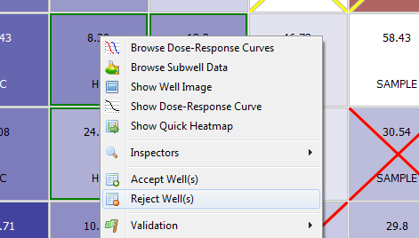
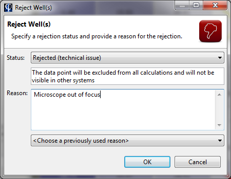
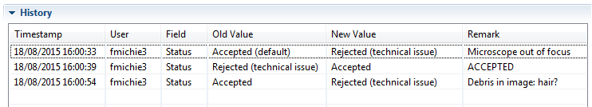

An important part of the plate validation process is the identification and elimination of wells that did not generate appropriate results. In Phaedra, these wells are called outliers, and they can be rejected with one of two status codes:
- Technical outlier: the circumstances in which the results were obtained, are not correct. For example, the well image contains unwanted artifacts or debris, or the microscope was out of focus during image acquisition, or the image analysis program failed to analyze the image correctly. These wells will be excluded from any further processing or calculation.
- Biological outlier: the biological effect is unexpected. For example, there were too few cells for reliable measurement due to cell death, or the effect is disturbed by an external biological factor. For traceability and data integrity reasons, these wells will still appear on dose-response curves as red crosses (though they will not partake in the curve fitting procedure).
In addition, certain plate effects may affect the results in multiple wells at once. If the errors are too large to correct individually, or too risky to compensate via normalization, these wells may need to be rejected as a group.
To reject one or more wells, you need to select them first. This can be done in many ways:
- Select the wells in a plate heatmap or table
- Select the wells in a dose-response curve
- Select the wells in the result set of a query
- Select the wells in a well scatter plot
- ...
To select multiple wells, hold down the Ctrl key while selecting them. Once you have made a selection, right-click on one of the wells and select Reject Well(s).

A dialog will appear asking you to specify a rejection status and a reason for rejection. These fields are required, you cannot leave them blank.

Once the wells have been rejected, the following happens:
- If the rejected wells are sample wells, their dose-response curves are re-fit.
- If the rejected wells are control wells, the whole plate is recalculated, including re-normalization of all wells and re-fitting of all curves.
- The rejected wells will be marked with a red (biological outlier) or yellow (technical outlier) cross on the plate heatmap.
Note: You cannot reject control wells on a plate that has been validated. You cannot reject any wells on a plate that has been approved.
Well rejections are logged in a history table, which can be inspected at any time for traceability and data integrity purposes. To do this, right-click on a well and select Inspectors > Well Inspector. At the bottom of the Well Inspector is the History table, which will list all rejection actions that have been performed on the selected well.
